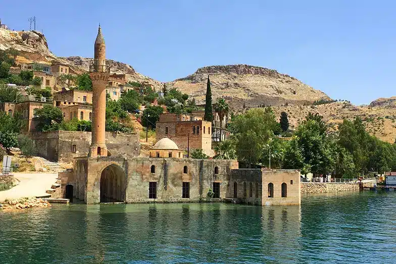
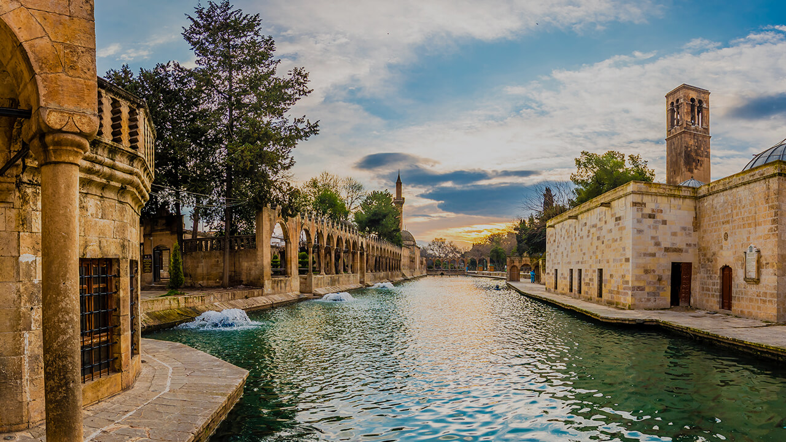
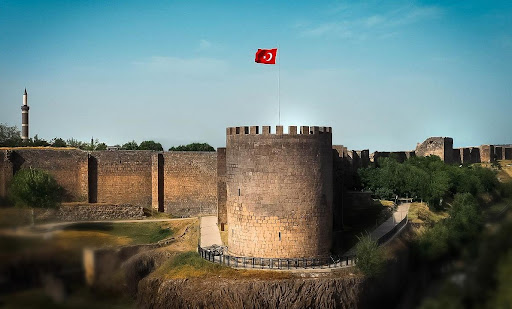
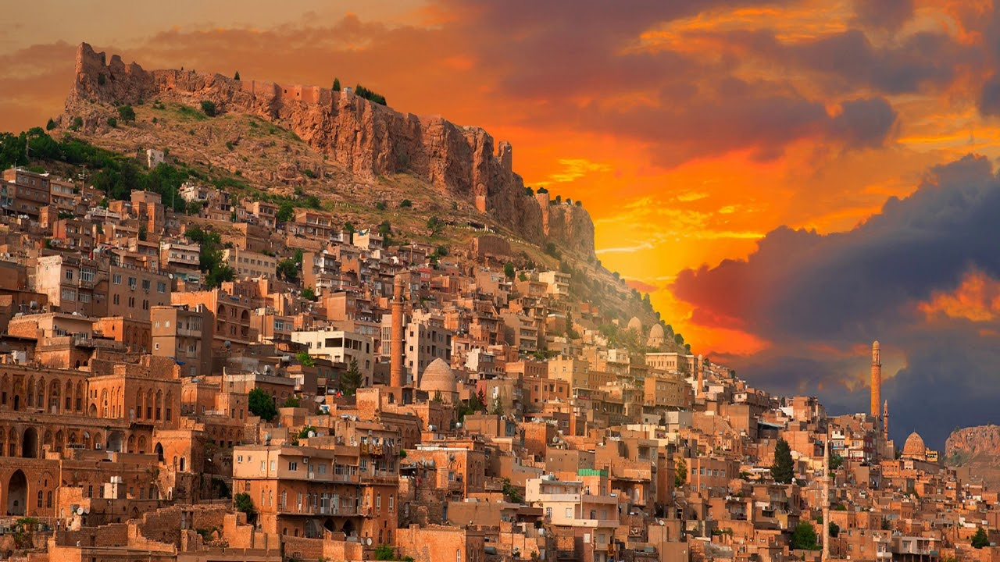
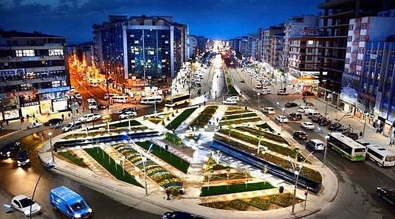
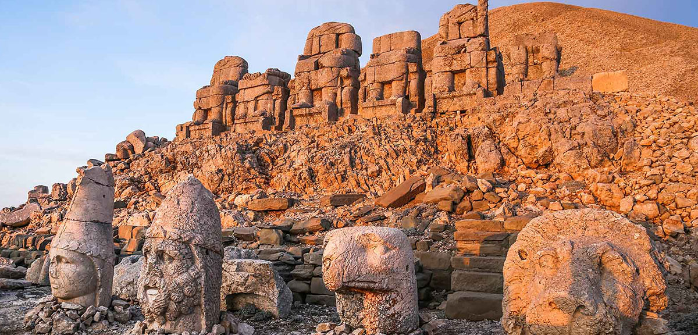
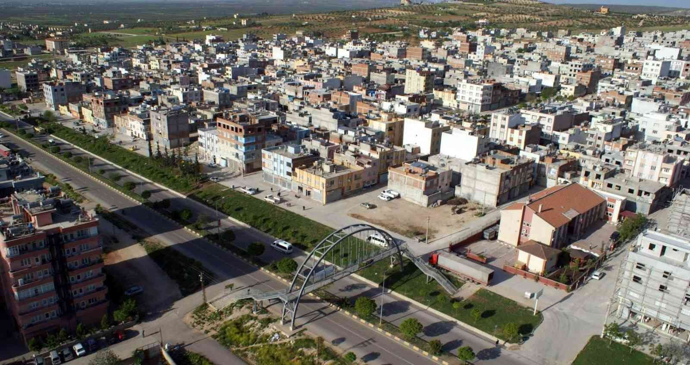
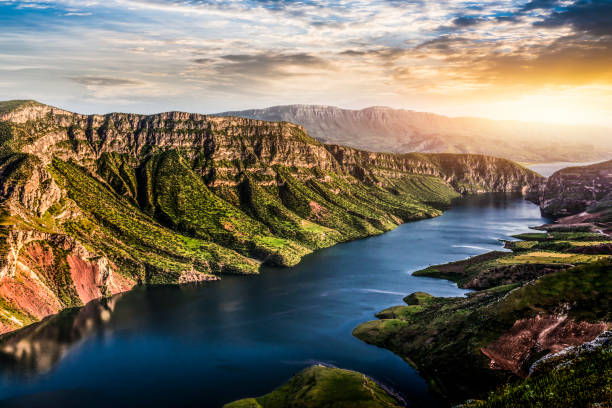
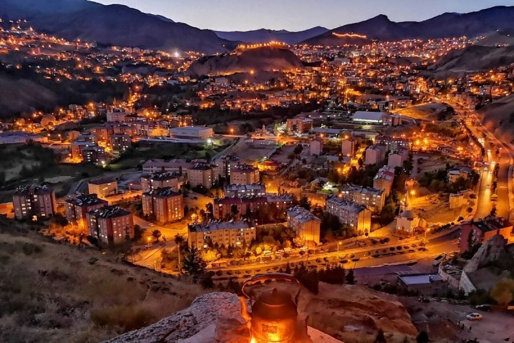

Dünyaca ünlü mutfağı, Zeugma Müzesi ve tarihi çarşılarıyla kültür başkentidir.

Balıklıgöl, Göbeklitepe ve peygamberler diyarı olarak bilinen kadim şehirdir.

Tarihi surları ve Hevsel Bahçeleriyle kültür ve tarih harmanı bir şehir.

Taş evleri, dar sokakları ve farklı dinlerin bir arada yaşadığı tarihi şehir.

Hasankeyf antik kentini barındıran ve Dicle Nehri ile hayat bulan şehir.

Nemrut Dağı ve dev heykelleriyle UNESCO mirasında yer alan eşsiz şehir.

Lezzetli mutfağı ve Suriye sınırına yakınlığıyla dikkat çeken küçük şehir.

Fıstığı, cas evleri ve manevi havasıyla tanınan sıcak iklimli bir şehir.

Cudi Dağı, Zaho sınırı ve doğal yaşam alanlarıyla öne çıkan sınır şehri.